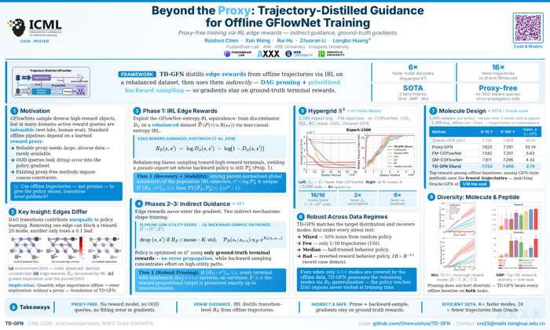
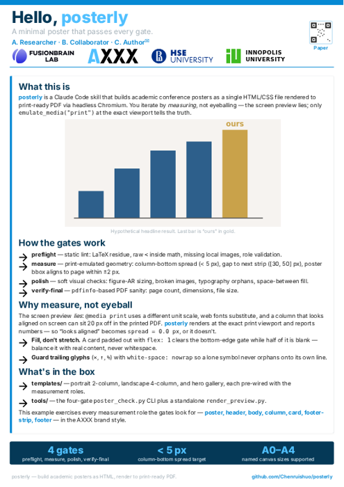

PowerFlow
ICML 2026 · 60×36 landscape
Four-column landscape with a framework banner and a beside-text training-dynamics card.

TD-GFN
ICML 2026 · 60×36 landscape
Four-column landscape; GFlowNet diversity results with a two-panel comparison figure.

OPT-AIL
NeurIPS 2024 · 60×36 landscape
Theory-forward landscape with complexity tables, a generalized eluder-coefficient result.

hello_world
A2 portrait · reference
Minimal single-column reference poster — the all-gates-green smoke test for the toolchain.